11 主成分分析 (PCA)
11.1 基本操作
Rで主成分分析 (PCA) を実行する関数として,
princomp()とprcomp()が用意されている.
機能は基本的には同じでありどちらを使っても良いが,
関数に与える引数名や
得られる結果の要素名が異なっているため,
適宜マニュアルで確認し, 的確に実行する必要がある.
データセット1: ソニー株価リターン vs パナソニック株価リターン
"sony_pana_close_Oct2015-Feb2016.csv"
- date: 10/01/15--02/19/16
- sony: ソニー株価 (日次終値)
- panasonic: パナソニック株価 (同)
- n = 94, p = 2price_dat <- read.csv("sony_pana_close_Oct2015-Feb2016.csv", header = T, row.name = 1)
sony_ret <- diff(log(price_dat[, "sony"]))
pana_ret <- diff(log(price_dat[, "panasonic"]))
ret_df <- data.frame(sony = sony_ret, pana = pana_ret, row.names = rownames(price_dat[-1,
]))
head(ret_df)
#> sony pana
#> 10/02/15 0.032186686 -0.012492607
#> 10/05/15 0.015394788 0.013693327
#> 10/06/15 0.004445863 0.007174204
#> 10/07/15 0.015406687 0.028964843
#> 10/08/15 -0.016357710 0.016832838
#> 10/09/15 0.018228035 0.036868819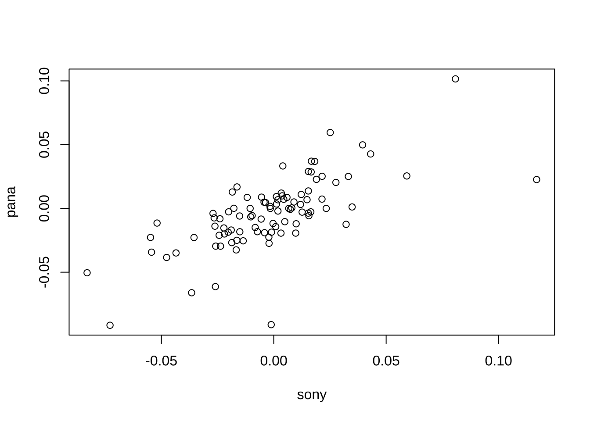
互いに相関のある2つ株価変動を1つの合成変量に集約するため, PCAを実行する.
データ行列ret_dfに対して, ここでは,
princomp()を適用する. princomp()は, デフォルトでは
分散共分散行列に対するPCAを実行する.
# PCA (分散共分散行列に対して)
ret_pca <- princomp(ret_df) # PCA on covariance matrix
summary(ret_pca)
#> Importance of components:
#> Comp.1 Comp.2
#> Standard deviation 0.03647457 0.01539678
#> Proportion of Variance 0.84876066 0.15123934
#> Cumulative Proportion 0.84876066 1.00000000princomp()の実行結果に対して関数summary()を適用し,
PCAの全体パフォーマンス (寄与率) を確認する.
今回のデータセットについては, 主成分1本で
データ全体の変動を約85%説明できることが分かる.
- 各PCの寄与プロット (scree plot)
主成分 (PC) を寄与の大きさで降順にプロットしたグラフで, 採用する主成分の本数を決定するのに使うことができる. (今回のデータセットはそもそも2変数なのであまり参考にはならない.)
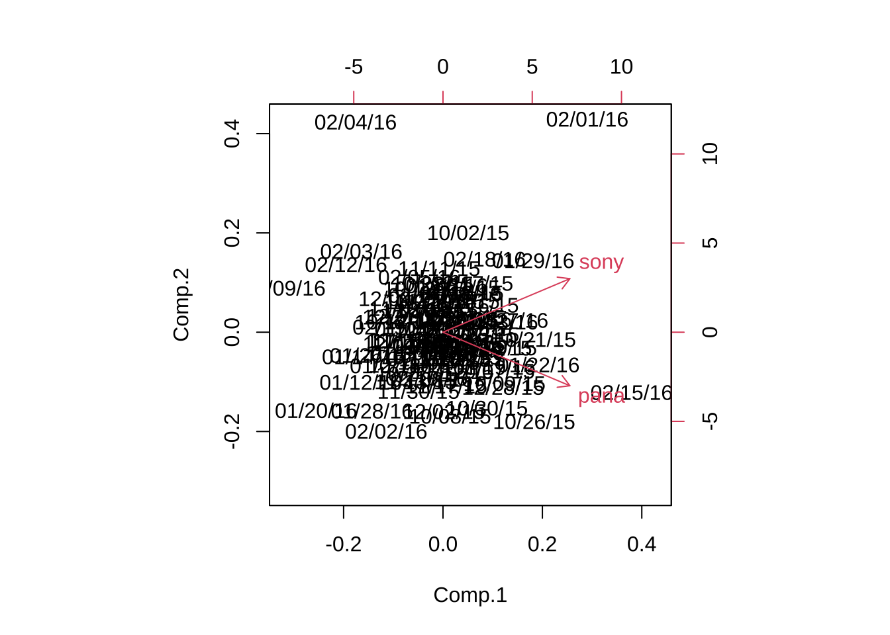
- データの中心 (各変数の平均値), 主成分の標準偏差
ret_pca$center
ret_pca$sd
#> sony pana
#> -0.001931057 -0.004103680
#> Comp.1 Comp.2
#> 0.03647457 0.01539678- PC負荷量
# PC負荷量（固有ベクトル）
ret_pca$loadings
#>
#> Loadings:
#> Comp.1 Comp.2
#> sony 0.721 0.693
#> pana 0.693 -0.721
#>
#> Comp.1 Comp.2
#> SS loadings 1.0 1.0
#> Proportion Var 0.5 0.5
#> Cumulative Var 0.5 1.0
# barplot(ret_pca$loadings) plot(ret_pca$loadings)PC負荷量 (各係数) の値を見ると, 第1主成分はソニー, パナソニック両者が同様な大きさ (0.7前後) で同方向 (ともに正) に貢献していることが分かる. 他方, 第2主成分は, 同様な大きさだが逆方向になっている.
すなわち, 第1主成分が2銘柄の (同一方向の) 同時変動を表す合成変数である. この1変数を使えば 上述のように元のデータの約85%の変動を説明できる.
なお, PCAでは符号に関しては一意に定まらないため, PC負荷量の符号を同時に反転させても良い.
- PC得点
# PC得点（符号反転前)
head(ret_pca$scores)
#> Comp.1 Comp.2
#> 10/02/15 0.018766080 0.029702336
#> 10/05/15 0.024824650 -0.000809378
#> 10/06/15 0.012415077 -0.003704272
#> 10/07/15 0.035422744 -0.011804820
#> 10/08/15 0.004122787 -0.025089215
#> 10/09/15 0.042936376 -0.015543559
plot(ret_pca$scores)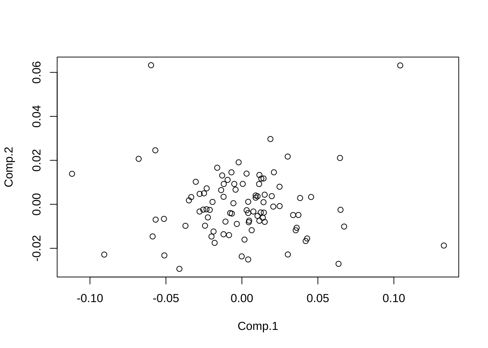
- biplot
biplotは, PC得点とPC負荷量の同時プロットである. これにより, データの構造と変数の寄与を視覚的に確認できる.
biplotとは
- PC得点:
- データのPC得点を (選択した2本のPCを軸に持つ) 2次元空間に散布図としてプロット. 各データ点が, 各PCについてどのように分布しているかを示す.
- PC負荷量
- 元の変数が主成分にどの程度寄与しているかを矢印としてプロット. 矢印の方向と長さが変数の主成分への寄与の方向と大きさを示す.比較のため, 次に相関行列に対するPCAも実行してみる.
princomp()では, 引数cor=TRUEを与えれば良い.
# PCA (相関行列に対して)
ret_pca <- princomp(ret_df, cor = T) # PCA on correlation matrix
summary(ret_pca)
#> Importance of components:
#> Comp.1 Comp.2
#> Standard deviation 1.3027885 0.5502202
#> Proportion of Variance 0.8486289 0.1513711
#> Cumulative Proportion 0.8486289 1.0000000分散共分散行列をしたPCAにおける, 変数のスケーリングの影響を確認するため,
元データを人為的にゆがめてから,
princomp()を実行してみる.
# 変数のスケーリング影響確認
ret_df2 <- data.frame(sony = sony_ret * 10, pana = pana_ret, row.names = rownames(price_dat[-1,
]))
# PCA (分散共分散行列に対して)
ret_pca2 <- princomp(ret_df2) # PCA on covariance matrix
summary(ret_pca2)
ret_pca2$loadings
#> Importance of components:
#> Comp.1 Comp.2
#> Standard deviation 0.2843268 0.019751604
#> Proportion of Variance 0.9951974 0.004802622
#> Cumulative Proportion 0.9951974 1.000000000
#>
#> Loadings:
#> Comp.1 Comp.2
#> sony 0.998
#> pana -0.998
#>
#> Comp.1 Comp.2
#> SS loadings 1.0 1.0
#> Proportion Var 0.5 0.5
#> Cumulative Var 0.5 1.0一番目の変数であるソニーの日次リターンを10倍にすると, PCAの結果が大きく変わってしまったことが確認される.
# PCA (相関行列に対して)
ret_pca3 <- princomp(ret_df2, cor = T) # PCA on correlation matrix
summary(ret_pca3)
#> Importance of components:
#> Comp.1 Comp.2
#> Standard deviation 1.3027885 0.5502202
#> Proportion of Variance 0.8486289 0.1513711
#> Cumulative Proportion 0.8486289 1.0000000
ret_pca3$loadings
#>
#> Loadings:
#> Comp.1 Comp.2
#> sony 0.707 0.707
#> pana 0.707 -0.707
#>
#> Comp.1 Comp.2
#> SS loadings 1.0 1.0
#> Proportion Var 0.5 0.5
#> Cumulative Var 0.5 1.0予想通り, 相関行列におけるPCAは 影響を受けていないことが確認される.
テクニカルな補足: princomp() vs prcomp()
- 主成分の計算方法
- princomp(): 固有値分解
- prcomp(): 特異値分解
- 分散共分散行列の計算方法
- princomp(): $1/n$ ($n$はサンプルサイズ) を使用
- prcomp(): $1/(n-1)$ を使用データセット2: 従業員スキル評価データ(仮想)
文字化けする場合には, 英語版”testdat_eng.csv”を使用しても良い.
"testdat_30_jap.csv" (日本語版/英語版)
- 氏名/Name
- 専門性/Expertise (0-100)
- 分析力/Analytics (同)
- リーダーシップ/Leadership (同)
- プレゼン力/Presentation (同)
- コミュ力/Communication (同)
- n = 9, p = 5tokuten <- read.csv("testdat_jap.csv", header = T, row.names = 1, skip = 1)
# colnames(tokuten) <- c('name', 'E', 'A', 'L', 'P', 'C')
tokuten
# 散布図
pairs(tokuten)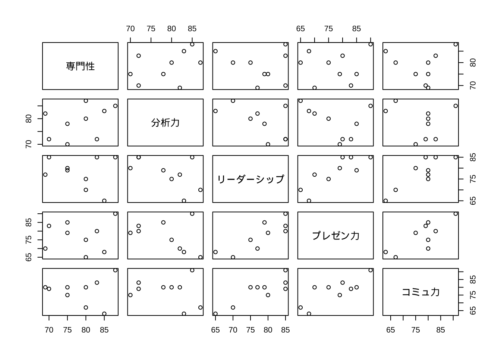
#> 専門性 分析力 リーダーシップ プレゼン力 コミュ力
#> 山田 80 87 70 65 67
#> 鈴木 85 83 65 68 63
#> 田中 75 70 80 79 75
#> 中村 70 72 85 83 79
#> 大野 88 85 85 90 91
#> 松井 75 78 79 85 80
#> 高木 80 80 75 75 80
#> 三浦 83 72 85 80 83
#> 佐藤 69 82 77 70 80分散共分散行列に対するPCAを実行する.
# 分散共分散行列に対するPCA（デフォルト)
tokuten_pc <- princomp(tokuten)
summary(tokuten_pc)
#> Importance of components:
#> Comp.1 Comp.2 Comp.3 Comp.4 Comp.5
#> Standard deviation 12.4807420 7.1424787 4.73037885 2.9724343 1.57269337
#> Proportion of Variance 0.6477709 0.2121478 0.09305346 0.0367422 0.01028558
#> Cumulative Proportion 0.6477709 0.8599188 0.95297222 0.9897144 1.00000000- Scree plot
plot(tokuten_pc) # Scree plot = barplot of PC variances (eigenvalues)
screeplot(tokuten_pc) # same as above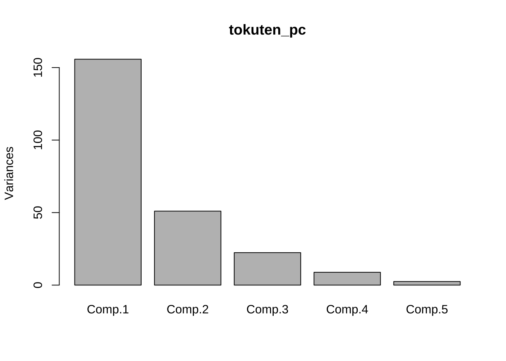
- PC負荷量
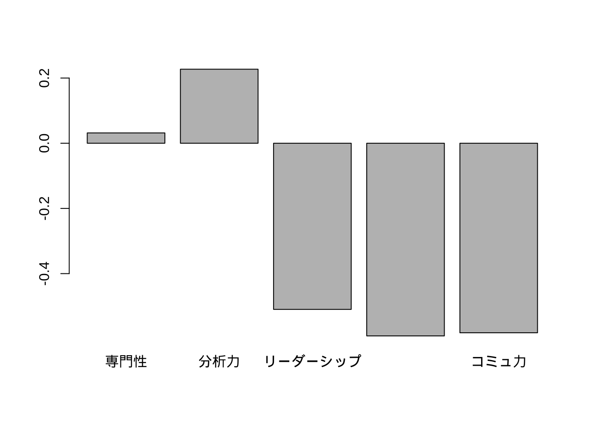
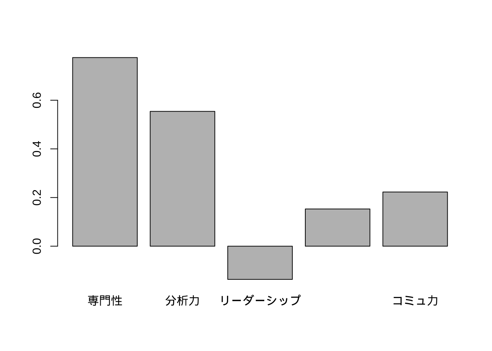
# 注) prcomp()の実行結果と, 符号が逆転
# t(tokuten_pc$loadings) %*% tokuten_pc$loadings\t\t# 直交性の確認
# scatter plot for 1st & 2nd PC plot(tokuten_pc$loadings[, 1:2], type = 'n',
# main = 'PC loadings: PC1 vs PC2')\t# plot only axis text(tokuten_pc$loadings,
# colnames(tokuten))
#>
#> Loadings:
#> Comp.1 Comp.2 Comp.3 Comp.4 Comp.5
#> 専門性 0.775 0.536 0.332
#> 分析力 0.227 0.554 -0.634 -0.325 0.366
#> リーダーシップ -0.510 -0.137 0.323 0.786
#> プレゼン力 -0.591 0.153 0.275 -0.741
#> コミュ力 -0.582 0.223 -0.486 0.362 -0.496
#>
#> Comp.1 Comp.2 Comp.3 Comp.4 Comp.5
#> SS loadings 1.0 1.0 1.0 1.0 1.0
#> Proportion Var 0.2 0.2 0.2 0.2 0.2
#> Cumulative Var 0.2 0.4 0.6 0.8 1.0- PC得点
# 主成分得点(データ毎)
tokuten_pc$scores
# plot(tokuten_pc$scores[, 1], tokuten_pc$scores[, 2], type = 'n', main = 'PC
# scores: PC1 vs PC2') text(tokuten_pc$scores[, 1], tokuten_pc$scores[, 2],
# rownames(tokuten), family = 'HiraKakuProN-W3') # 日本語文字化け対応の例 (mac)
#> Comp.1 Comp.2 Comp.3 Comp.4 Comp.5
#> 山田 19.304343 2.7048291 -2.4411238 0.5754498 2.6750248
#> 鈴木 21.655520 4.6155395 5.6073003 -1.7490457 -0.7368287
#> 田中 -2.739766 -8.0346039 5.4765050 0.1887216 -0.4687677
#> 中村 -9.682974 -9.9826824 0.6190434 -2.0247358 1.8769769
#> 大野 -17.277425 14.9224986 -1.8787424 -1.1322419 0.8666327
#> 松井 -6.867523 -1.4328205 -0.3577567 -5.3750278 -1.0885751
#> 高木 1.694979 2.5684468 -1.6399325 1.7537323 -2.8802837
#> 三浦 -9.824535 0.5291295 4.8161616 5.9565572 0.4056066
#> 佐藤 3.737381 -5.8903368 -10.2014547 1.8065903 -0.6497859- biplot
デフォルトでは, 第1,2主成分が自動選択される.
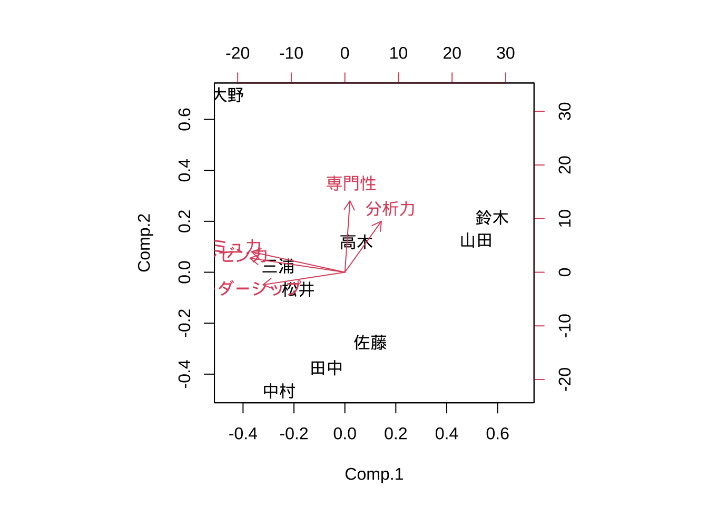
※ データセットに含まれる日本語が文字化けすることがある. 上のコードは macにおける対応の例であり, 各自の使用pcの環境に応じた対応が必要となる可能性がある.
# 計算結果確認
(yama <- tokuten["山田", ] - apply(tokuten, 2, mean)) # demeaned score
#> 専門性 分析力 リーダーシップ プレゼン力 コミュ力
#> 山田 1.666667 8.222222 -7.888889 -12.22222 -10.55556
sum(tokuten_pc$loadings[, "Comp.1"] * yama) # Yamada's PC1 score
#> [1] 19.30434
sum(tokuten_pc$loadings[, "Comp.2"] * yama) # Yamada's PC2 score
#> [1] 2.704829
# compare this with tokuten_pc$scores['Yamada', ]- PC得点, PC負荷量
# 第1, 2主成分
tokuten_pc$scores[, 1:2]
tokuten_pc$loadings[, 1:2]
#> Comp.1 Comp.2
#> 山田 19.304343 2.7048291
#> 鈴木 21.655520 4.6155395
#> 田中 -2.739766 -8.0346039
#> 中村 -9.682974 -9.9826824
#> 大野 -17.277425 14.9224986
#> 松井 -6.867523 -1.4328205
#> 高木 1.694979 2.5684468
#> 三浦 -9.824535 0.5291295
#> 佐藤 3.737381 -5.8903368
#> Comp.1 Comp.2
#> 専門性 0.03162775 0.7753770
#> 分析力 0.22710092 0.5541994
#> リーダーシップ -0.50974398 -0.1365068
#> プレゼン力 -0.59111858 0.1530044
#> コミュ力 -0.58151936 0.2227311princomp()に代わり, prcomp()を使った例を示す.
# 代替的関数 prcomp()\t# 不偏分散共分散行列の使用 (÷(n-1))
tokuten_prcomp <- prcomp(tokuten)
# tokuten_prcomp <- prcomp(tokuten, scale = T)
summary(tokuten_prcomp)
#> Importance of components:
#> PC1 PC2 PC3 PC4 PC5
#> Standard deviation 13.2378 7.5757 5.01732 3.15274 1.66809
#> Proportion of Variance 0.6478 0.2122 0.09305 0.03674 0.01029
#> Cumulative Proportion 0.6478 0.8599 0.95297 0.98971 1.00000
tokuten_prcomp$rotation # PC負荷量
#> PC1 PC2 PC3 PC4 PC5
#> 専門性 -0.03162775 0.7753770 0.53571555 0.3316583 -0.02831625
#> 分析力 -0.22710092 0.5541994 -0.63357070 -0.3251925 -0.36623249
#> リーダーシップ 0.50974398 -0.1365068 -0.01367592 0.3227645 -0.78559724
#> プレゼン力 0.59111858 0.1530044 0.27483158 -0.7411911 0.04766342
#> コミュ力 0.58151936 0.2227311 -0.48567230 0.3615403 0.49561793
tokuten_prcomp$x # PC得点
#> PC1 PC2 PC3 PC4 PC5
#> 山田 -19.304343 2.7048291 -2.4411238 0.5754498 -2.6750248
#> 鈴木 -21.655520 4.6155395 5.6073003 -1.7490457 0.7368287
#> 田中 2.739766 -8.0346039 5.4765050 0.1887216 0.4687677
#> 中村 9.682974 -9.9826824 0.6190434 -2.0247358 -1.8769769
#> 大野 17.277425 14.9224986 -1.8787424 -1.1322419 -0.8666327
#> 松井 6.867523 -1.4328205 -0.3577567 -5.3750278 1.0885751
#> 高木 -1.694979 2.5684468 -1.6399325 1.7537323 2.8802837
#> 三浦 9.824535 0.5291295 4.8161616 5.9565572 -0.4056066
#> 佐藤 -3.737381 -5.8903368 -10.2014547 1.8065903 0.6497859
# biplot(tokuten_prcomp)
biplot(tokuten_prcomp, family = "HiraKakuProN-W3")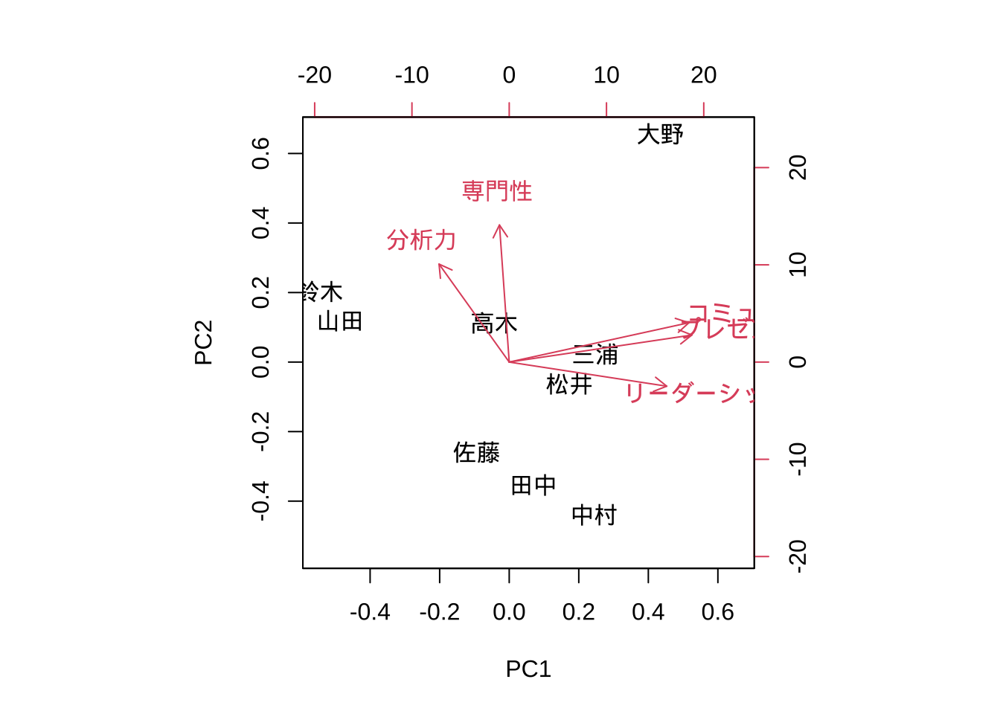
11.2 分散共分散行列 vs 相関行列
データセット3: USArrests data
USArrests
- 全米50州, 1973念
- 人口10万人当たりの凶悪犯罪(Assault, Murder, Rape)件数, 及び都市部の人口割合(UrbanPop, %)
- n = 50, p = 4USArrests
#> Murder Assault UrbanPop Rape
#> Alabama 13.2 236 58 21.2
#> Alaska 10.0 263 48 44.5
#> Arizona 8.1 294 80 31.0
#> Arkansas 8.8 190 50 19.5
#> California 9.0 276 91 40.6
#> Colorado 7.9 204 78 38.7
#> Connecticut 3.3 110 77 11.1
#> Delaware 5.9 238 72 15.8
#> Florida 15.4 335 80 31.9
#> Georgia 17.4 211 60 25.8
#> Hawaii 5.3 46 83 20.2
#> Idaho 2.6 120 54 14.2
#> Illinois 10.4 249 83 24.0
#> Indiana 7.2 113 65 21.0
#> Iowa 2.2 56 57 11.3
#> Kansas 6.0 115 66 18.0
#> Kentucky 9.7 109 52 16.3
#> Louisiana 15.4 249 66 22.2
#> Maine 2.1 83 51 7.8
#> Maryland 11.3 300 67 27.8
#> Massachusetts 4.4 149 85 16.3
#> Michigan 12.1 255 74 35.1
#> Minnesota 2.7 72 66 14.9
#> Mississippi 16.1 259 44 17.1
#> Missouri 9.0 178 70 28.2
#> Montana 6.0 109 53 16.4
#> Nebraska 4.3 102 62 16.5
#> Nevada 12.2 252 81 46.0
#> New Hampshire 2.1 57 56 9.5
#> New Jersey 7.4 159 89 18.8
#> New Mexico 11.4 285 70 32.1
#> New York 11.1 254 86 26.1
#> North Carolina 13.0 337 45 16.1
#> North Dakota 0.8 45 44 7.3
#> Ohio 7.3 120 75 21.4
#> Oklahoma 6.6 151 68 20.0
#> Oregon 4.9 159 67 29.3
#> Pennsylvania 6.3 106 72 14.9
#> Rhode Island 3.4 174 87 8.3
#> South Carolina 14.4 279 48 22.5
#> South Dakota 3.8 86 45 12.8
#> Tennessee 13.2 188 59 26.9
#> Texas 12.7 201 80 25.5
#> Utah 3.2 120 80 22.9
#> Vermont 2.2 48 32 11.2
#> Virginia 8.5 156 63 20.7
#> Washington 4.0 145 73 26.2
#> West Virginia 5.7 81 39 9.3
#> Wisconsin 2.6 53 66 10.8
#> Wyoming 6.8 161 60 15.6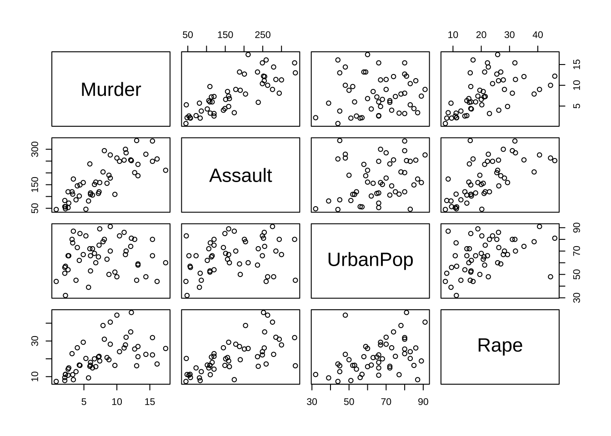
#> Murder Assault UrbanPop Rape
#> Min. : 0.800 Min. : 45.0 Min. :32.00 Min. : 7.30
#> 1st Qu.: 4.075 1st Qu.:109.0 1st Qu.:54.50 1st Qu.:15.07
#> Median : 7.250 Median :159.0 Median :66.00 Median :20.10
#> Mean : 7.788 Mean :170.8 Mean :65.54 Mean :21.23
#> 3rd Qu.:11.250 3rd Qu.:249.0 3rd Qu.:77.75 3rd Qu.:26.18
#> Max. :17.400 Max. :337.0 Max. :91.00 Max. :46.002種類のPCAを実行する.
# どちらが良いか? (pc_cr1 <- princomp(USArrests)) (pc_cr2 <-
# princomp(USArrests, cor = TRUE))
(pc_cr3 <- prcomp(USArrests))
#> Standard deviations (1, .., p=4):
#> [1] 83.732400 14.212402 6.489426 2.482790
#>
#> Rotation (n x k) = (4 x 4):
#> PC1 PC2 PC3 PC4
#> Murder 0.04170432 -0.04482166 0.07989066 -0.99492173
#> Assault 0.99522128 -0.05876003 -0.06756974 0.03893830
#> UrbanPop 0.04633575 0.97685748 -0.20054629 -0.05816914
#> Rape 0.07515550 0.20071807 0.97408059 0.07232502
(pc_cr4 <- prcomp(USArrests, scale = TRUE))
#> Standard deviations (1, .., p=4):
#> [1] 1.5748783 0.9948694 0.5971291 0.4164494
#>
#> Rotation (n x k) = (4 x 4):
#> PC1 PC2 PC3 PC4
#> Murder -0.5358995 0.4181809 -0.3412327 0.64922780
#> Assault -0.5831836 0.1879856 -0.2681484 -0.74340748
#> UrbanPop -0.2781909 -0.8728062 -0.3780158 0.13387773
#> Rape -0.5434321 -0.1673186 0.8177779 0.08902432どちらのPCAが良いか? その理由は何か?
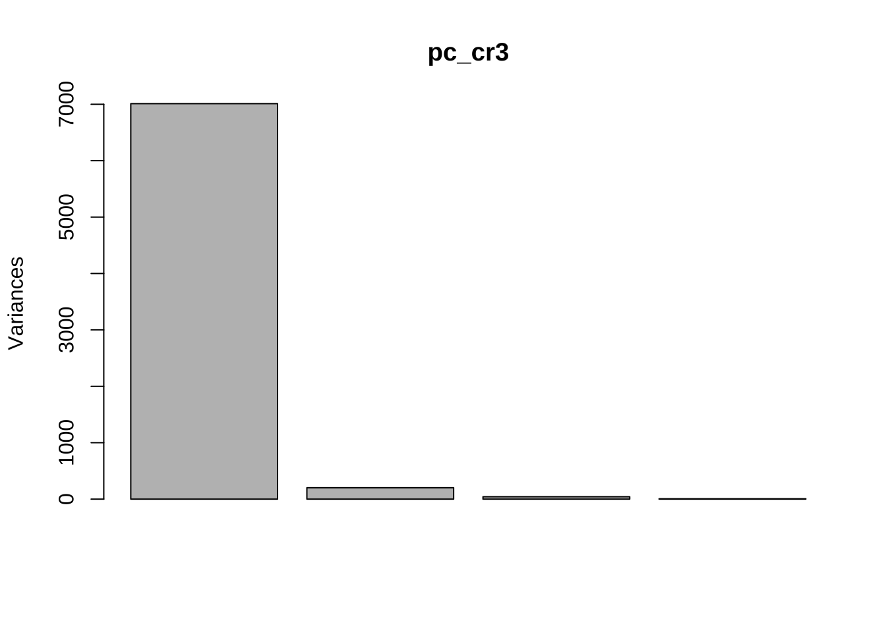
summary(pc_cr3)
#> Importance of components:
#> PC1 PC2 PC3 PC4
#> Standard deviation 83.7324 14.21240 6.4894 2.48279
#> Proportion of Variance 0.9655 0.02782 0.0058 0.00085
#> Cumulative Proportion 0.9655 0.99335 0.9991 1.00000
plot(pc_cr4)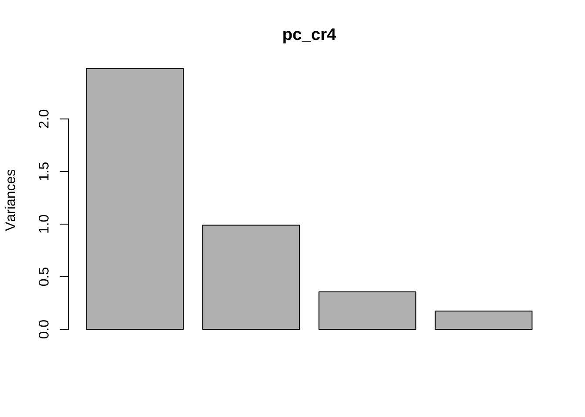
summary(pc_cr4)
#> Importance of components:
#> PC1 PC2 PC3 PC4
#> Standard deviation 1.5749 0.9949 0.59713 0.41645
#> Proportion of Variance 0.6201 0.2474 0.08914 0.04336
#> Cumulative Proportion 0.6201 0.8675 0.95664 1.00000PCAを適用する変数を絞り込む方法
prcomp()では, 式で指定できる. データセットUSArrestsのうち,
人口割合を除く3変数に対してPCAを実行する.
# PCAにかける変数の絞り込み
prcomp(~Murder + Assault + Rape, data = USArrests, scale = TRUE)
#> Standard deviations (1, .., p=3):
#> [1] 1.5357670 0.6767949 0.4282154
#>
#> Rotation (n x k) = (3 x 3):
#> PC1 PC2 PC3
#> Murder -0.5826006 0.5339532 -0.6127565
#> Assault -0.6079818 0.2140236 0.7645600
#> Rape -0.5393836 -0.8179779 -0.1999436